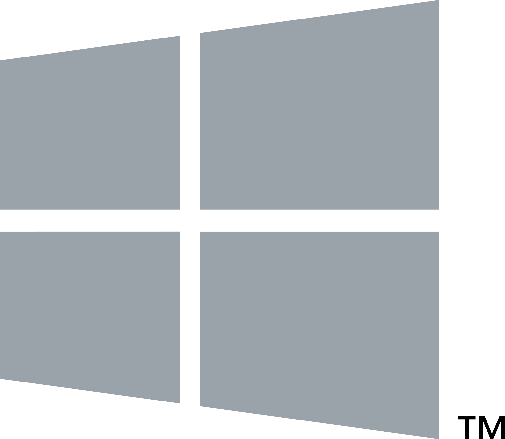

LevelDB
A light-weight, single-purpose library for persistence with bindings to many platforms.
Languages
Features
Sorted by keys
By default, LevelDB stores entries lexicographically sorted by keys. The sorting is one of the main distinguishing features of LevelDB amongst similar embedded data storage libraries and comes in very useful for querying as we’ll see later.
Arbitrary byte arrays
Both keys and values are treated as simple arrays of bytes, so content can anything from ASCII strings to binary blobs.
Compressed storage
Google’s Snappy compression library is an optional dependency that can decrease the on-disk size of LevelDB stores with minimal sacrifice of speed. Snappy is highly optimized for fast compression and therefore does not provide particularly high compression ratios on common data.
Highlights
Kernel‑Like
Most databases are mysterious black-boxes. LevelDB provides a highly transparent, light-weight foundation for you to compose higher-level features on top of.
Embeddable
LevelDB is embedded, but can be networked adding protocols such as http, tcp or udp to your process.
Scalable
Levelup is a Node.js project that aims to provide a common, portable interface to a multitude of LevelDB forks such as Hyperdex.
Portable
LevelDB has a small set of primitives. This allows more complex features such as replication, map-reduce, pub-sub, etc. to be published as modules.
Supported Platforms
- OS X
- Linux
- Windows
- Illumos
Conference Talks
LevelDB (workshop)
Paolo Fragomeni at CampJS (May 23–26th 2014)
LevelDB (sessions and workshops)
Various camp counsellors at NodeConf (July 3rd–6th)
LevelDB + Node.js: A persistance renaissance (workshop)
Paolo Fragomeni at Forward.js (July 24–26th)
How to Cook a Graph Database in a Night
Matteo Collina at JSConf.it (2014)
A Real Database Rethink
Rod Vagg at NodeConf.eu (2013)
A modular database?
Dominic Tarr at NodeConf.eu (2013)
Level me up, Scotty!
Julian Gruber at NodeConf.eu (2013)
Papers
Companies
Community
Visit us on irc.freenode.net in ##leveldb.
Do you have a detailed question? Check out Google Groups!